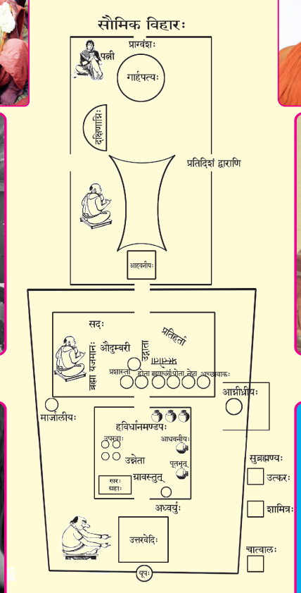
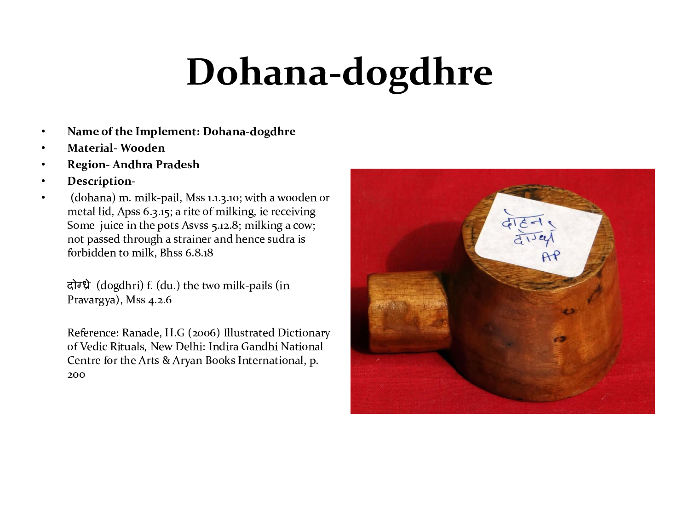
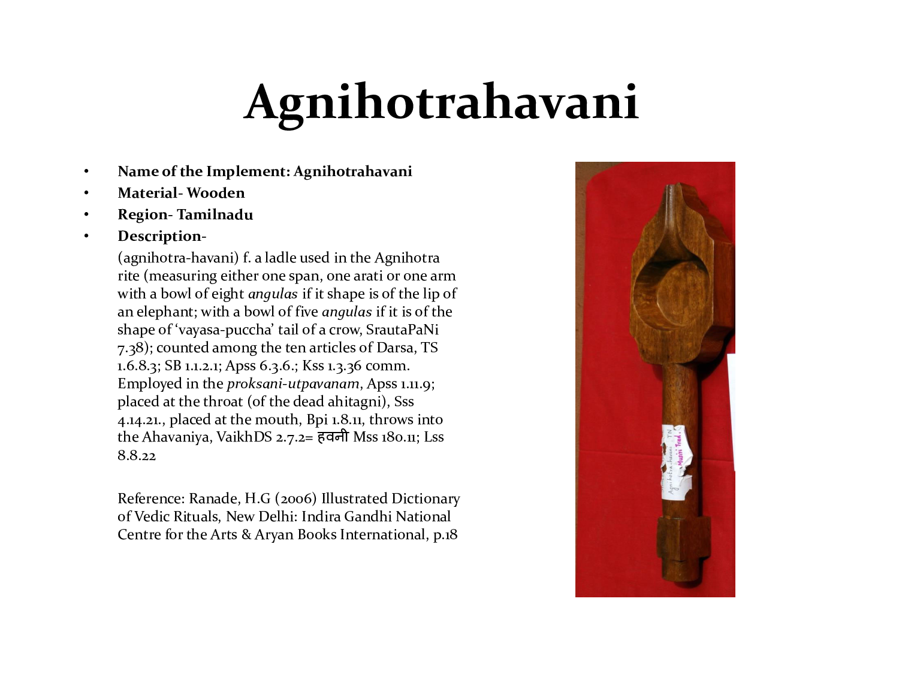

रुद्रदत्तटीखा ऽत्र। धूर्तस्वाम्य् अत्र।
अग्निहोत्रं व्याख्यास्यामः १

चलच्चित्राण्य् अत्र।
चोदनम्
न राजन्यस्य जुहुयात् +++(किञ्च धार्यन्ते गतश्रियो ऽग्नयः।)+++१० होमकाले गृहेभ्यो ब्राह्मणायान्नं प्रहिणुयात्तेनो हैवास्य हुतं भवति ११ नित्यमग्न्युपस्थानं वाचयितव्यः १२ यो वा +++(राजन्यः)+++ सोमयाजी सत्यवादी तस्य जुहुयात् +++(इति विकल्पः)+++ १३
अहरहर्यजमानः स्वयमग्निहोत्रं जुहुयात् १४ पर्वणि वा १५ ब्रह्मचारी वा जुहुयाद् - ब्रह्मणा हि स परिक्रीतो भवति । क्षीरहोता +++(अग्निहोत्रशेषक्षीरभृत्, धनेन भृतो वा)+++ वा जुहुयाद् -धनेन हि स परिक्रीतो भवतीति बह्वृचब्राह्मणम् १६
न प्रातरग्निमुप चन+++(=अपि)+++ +अवरोहेन्, +++(तर्हि)+++ न प्रातर् आहिताग्निश् +++(अस्मीति)+++ चन मन्येतेति वाजसनेयकम् ६ +++(अहुते न भोक्तव्यमित्यादीनि व्रतानि चरेत्।)+++
उद्बोधनम्
अधिवृक्षसूर्य आविः+++(=प्रकाश)+++सूर्ये वा “धृष्टिरसि ब्रह्म यच्छे"त्युपवेषमादाय गार्हपत्यमभिमन्त्रयते “सुगार्हपत्य” इति २ अथैनं बोधयत्य् “उद्बु॑ध्यस्वाग्ने॒ प्रति॑ जागृह्येनम्+++(=यजमानम्)+++, इष्टापू॒र्ते सꣳसृ॑जेथाम॒यं च॑ +++(त्वञ्च)+++। अ॒स्मिन्थ् स॒धस्थे॒ +++(=सहस्थाने - लोके)+++ अध्युत्त॑रस्मिन्न् +++(द्युलोके)+++ विश्वे॑ देवा॒ यज॑मानश्च सीदत " इति ३
उद्धरणम्
“उद्धरेत्ये"व सायमाह यजमानः +++(उद्धरणमन्त्रन्त्वध्वर्युः)+++। “उद्धरे"ति प्रातः ४
सहस्रं तेन कामदुघो ऽवरुन्द्धे+++(=लभते)+++ ५
“वाचा त्वा होत्रा प्राणेनोद्गात्रा चक्षुषाध्वर्युणा मनसा ब्रह्मणा श्रोत्रेणाग्नीधैतैस्त्वा पञ्चभिर्दैव्यैरृत्विग्भिरुद्धरामी"ति गार्हपत्यादाहवनीयं ज्वलन्तमुद्धरति ६
“भूर्भुवः सुवरुद्ध्रियमाण उद्धर पाप्मनो मा यदविद्वान्यच्च विद्वांश्चकार । अह्ना यदेनः कृतमस्ति पापं सर्वस्मान् मोद्धृतो मुञ्च तस्मादि"त्युद्ध्रियमाणमभिमन्त्रयते यजमानः सायम् । “रात्र्या यदेनः कृतमस्ति पापं सर्वस्मान्मोद्धृतो मुञ्च तस्मादि"ति प्रातः ७
“अग्निपतये ऽग्नये मे विद्ध्यग्निपतयेऽग्नये मे मृड । अमृताहुतिममृतायां जुहोम्यग्निं पृथिव्याममृतस्य जित्यै । तयानन्तं काममहं जयानि, प्रजापतिर्यं प्रथमो जिगाय+++(=अजयत्?)+++ +अग्निम् अग्नौ स्वाहा” ८
“अग्ने सम्राडजैकपादाहवनीय दिवः पृथिव्याः पर्यन्तरिक्षाल् लोकं विन्द यजमानाय । पृथिव्यास्त्वा मूर्धन् सादयामि यज्ञिये लोके । यो नो अग्ने निष्ठो यो ऽनिष्ट्यो ऽभिदासतादमहं तं त्वयाभिनिदधामी"ति पुरस्तात् परिक्रम्योदङ्मुखः प्रत्यङ्मुखो वा सायमायतनेऽग्निं प्रतिष्ठापयति । प्राङ्मुखः प्रातः १ +++(सूर्यादग्निरायातीति भावः)+++
इध्माहरणम्
स्वयं यजमान इध्मानाहरति “विश्वदानीमाभरन्तो नातुरेण मनसा । अग्ने मा ते प्रतिवेशा रिषामे"त्येतया २
“यदग्ने यानि कानि चे"त्येताभिः पञ्चभिः प्रतिमन्त्रमग्निषु महत इध्मानादधाति ३ आहवनीये वर्षिष्ठम्+++(=गुरुतरः)+++ ४
यथाहितास् तेनानुपूर्व्येणाऽऽहवनीयाद्वा प्रक्रम्य +++(आदधाति)+++५
तथाग्निराधेयो+++(अच्छिद्र इध्मः)+++ यथाहुतिर्न व्यवेयात् +++(=भित्त्वाग्निं भूमिं न प्राप्नुयात्)+++ ६
आहरणम्
यद्याहार्योऽहरहरेनं+++(=दक्षिणाग्निम्)+++ दक्षिण+++(देश)+++त आहरन्ति १५
उपवसथ+++(=अग्न्यन्वाधानकाले, अग्निस्थापनात्परम् इध्माधाने)+++ एवैनमाहरेयुर्, नवावसान+++(=देशान्तरप्राप्तौ वासार्थं)+++ एवैनम् आहरेयुरिति वाजसनेयकम् १६
परिसमूहनम्, परिस्तरणम्
परिसमूहनेनाग्नीनलंकुर्वन्ति १
पुरस्तादलंकाराः सायम्, +++(दीदिहीत्युपसमिन्धनात्)+++ उपरिष्टादलंकाराः प्रातः २ एतद्वा विपरीतम् । उभयतोऽलंकाराः सायं तथा प्रातरित्येके ३
+++(अग्ने गृहपते/ व्रतपते/ सम्राट् शुन्धस्व।)+++
उदगग्रैः प्रागग्रैश्च दर्भैस् तृणैर् वाग्नीन् परिस्तृणात्यग्निमग्नी वा ५
खादिरः स्रुवो वैकङ्कत्य् अग्निहोत्रहवणी बाहुमात्र्य् अरत्निमात्री वा ६
गोदोहः

दक्षिणेन विहारमग्निहोत्री +++(गौः)+++ तिष्ठति, तां यजमानोऽभिमन्त्रयत “इडासि व्रतभृदहं नावुभयोर्व्रतं चरिष्यामि, सुरोहिष्यहं नावुभयोर्व्रतं चरिष्यामीड एहि, मयि श्रयस्वेर एह्यदित एहि, गौरेहि, श्रद्ध एहि, सत्येन त्वाह्वयामी"ति ८
अथ वेदिदेशम् अभिमृशती"यमसि, तस्यास्ते ऽग्निर्वत्सः, सा मे स्वर्गं च लोकममृतं च धुक्ष्वे"ति ९
“पूषासी"ति दक्षिणतो वत्समुपसृज्य, प्राचीमावृत्य, दोग्ध्युदीचीं प्राचीमुदीचीं वा १०
न शूद्रो दुह्यात् ११ असतो वा एष संभूतो यच्छूद्रः १२ दुह्याद्वा १३ यदेव गार्हपत्ये ऽधिश्रयति पवयत्येवैनत् १४
अग्निहोत्रस्थाल्या दोहनेन च दोग्धि १५
पूर्वौ +++(स्तनौ)+++ दुह्याज्ज्येष्ठस्य ज्यैष्ठिनेयस्य+++(=ज्येष्ठभार्यापुत्रः)+++ यो वा गतश्रीः स्यात् । अपरौ दुह्यात्कनिष्ठस्य कानिष्ठिनेयस्य यो वानुजावरो यो वा बुभूषेत् १
+++(प्रस्नवनार्थं)+++ न स्तनान्संमृशति २
यथोपलम्भं +++(स्तनविशेषमनवेक्ष्य)+++ नित्ये कल्पे दोग्धि ३
पूर्ववद् उपसृष्टां दुह्यमानां धाराघोषं च यजमानो ऽनुमन्त्रयते ४
अस्तमिते दोग्धि ५
पशुकाम्यकल्पः
द्वयोः +++(गवोः)+++ पयसा पशुकामस्य जुहुयात् ८
अग्निहोत्रस्थाल्या पूर्वां दोग्धि । दोहनेनोत्तराम् ९
अधिश्रित्य पूर्वमुत्तरमानयति १०
यस्य रुद्रः पशूञ् छमायेत+++(=हन्यात्)+++ +एतयैवावृता+++(=रीत्या)+++ द्वयोः पयसा सायंप्रातर्जुहुयात् ११
तच्चेद् अतिहन्यात् “सजूर् जातवेदो दिव आ पृथिव्या अस्य हविषो घृतस्य वीहि स्वाहे"ति सायंप्रातराज्येन जुहुयात् +++(प्रधानाहुतिम्)+++ १२
+++(ततो मन्त्रविकृतिः क्वचित् - “आग्नेयं हविः प्रजननं” -> “आग्नेयं जातवेदसं हविः प्रजननं”, “अग्निः प्रजां बहुलाम्” -> “अग्निर् जातवेदाः प्रजां बहुलाम्”)+++
+++(रुद्र)+++ अनारमत्य् “अग्ने दुःशीततनो जुषस्व स्वाहे"ति द्वादशाहमाज्येन हुत्वा, तत ऊर्ध्वं न सूर्क्षेत्+++(=आद्रियेत, नैष्फल्यं पापभारवशाद् इत्यङ्गीकृत्य)+++ १३
हविरन्तराणि
पयसा पशुकामस्य जुहुयाद्, दध्नेन्द्रियकामस्य, यवाग्वा ग्रामकामस्य, ओदनेनान्नाद्यकामस्य, तण्डुलैरोजस्कामस्य - बलकामस्येत्येके, मांसेन यशस्कामस्य, सोमेन ब्रह्मवर्चसकामस्य, आज्येन तेजस्कामस्य १
आज्येन तण्डुलैरोदनेन सोमेन वा +++(न तु पयसा)+++ जुहुयाद् यस्याप्रतिषेक्यं स्यात् +++(अप्रतिषेक्यं स्यात् तेजस्कामस्य … इति सूत्रान्तरम्।)+++ ८
आज्येन तेजस्कामः संवत्सरं जुहुयाद् द्वादशाहं वा ९
अमावास्याविशेषः
अमावास्यायां +++(क्रियायां - कर्मसूचकोऽत्र प्रयोगः)+++ रात्र्यां स्वयं यजमानो यवाग्वा+++(=यवपिष्टजलपाकेन)+++ ऽऽग्निहोत्रं जुहोत्य् अग्निहोत्रोच्छेषणम् आतञ्चनार्थं+++(=घनीभावाय)+++ निदधाति १
नास्यैतां रात्रिं कुमाराश् चन+++(=अपि)+++ पयसो लभन्ते २
प्रारम्भः
कालः
अम्नर्+++(ईषद्)+++ अस्तमिते होतव्यम्।
समुद्रो वा एष यदहोरात्रस्तस्यैते गाधे तीर्थे यत्संधी। तस्मात् संधौ होतव्यमिति शैलालिब्राह्मणं भवति ७
+++(प्रथमं)+++ नक्षत्रं दृष्ट्वा, प्रदोषे +++(सर्वेषु नक्षेत्रेषूदितेषु)+++, निशायां +++(=यदा शेरते भूताः)+++ वा सायम् ८
उषस्युपोदयं, समयाविषित +++(अर्धोदितः)+++, उदिते वा प्रातः ९
+++(आपदि)+++ यदुदिते जुहोत्यग्निष्टोमं तेनावरुन्द्धे।
यन्मध्यंदिने जुहोत्युक्थ्यं तेनावरुन्द्धे।
यदपराह्णे जुहोति षोडशिनं तेनावरुन्द्धे।
यत्पूर्वरात्रे जुहोति +++(अतिरात्रे)+++ प्रथमं तेन रात्रिपर्यायमाप्नोति।
यन्मध्यरात्रे जुहोति मध्यमं तेन रात्रिपर्यायमाप्नोति।
यदपररात्रे जुहोति जघन्यं तेन रात्रिपर्यायमाप्नोति। १०
स +++(स्वस्थो)+++ न मन्येत सर्वेष्वेतेषु कालेषु होतव्यम् +++(इति)+++। आपदि हुतम् इत्येव प्रतीयादिति विज्ञायते +++(न तदा प्रायश्चित्तम्)+++११
यो होमकालः सोऽङ्गानाम् १२
पत्नी
पत्नीवदस्याग्निहोत्रं भवति १
स्व आयतने+++(दर्शपूर्णमाससिद्धम् - देशाद्दक्षिणत उदीची)+++ पत्न्युपविशति २
आचमनम्
अपरेणाहवनीयं दक्षिणातिक्रम्योपविश्य यजमानो “विद्युदसि विद्य मे पाप्मानमृतात्सत्यमुपैमि मयि श्रद्धे"त्यप आचामति ३
परिषेचनम्
“ऋतं त्वा सत्येन परिषिञ्चामी"ति सायं परिषिञ्चति । “सत्यं त्वर्तेन परिषिञ्चामी"ति प्रातः । आहवनीयमग्रे ऽथ गार्हपत्यमथ दक्षिणाग्निमपि वा गार्हपत्यमाहवनीयं दक्षिणाग्निं यथा वाहिताः ४
सन्ततिधारा
“यज्ञस्य संततिरसि यज्ञस्य त्वा संततिमनुसंतनोमी"ति गार्हपत्यात्प्रक्रम्य संततामुदकधारां स्रावयत्याहवनीयात् ५
हविर्व्यवस्था
अपोहनम्
“धृष्टिरसि ब्रह्म यच्छे"त्युपवेषमादाय
“भूतकृतस्थापोढं जन्यं भयमपोढाः सेना अभीत्वरीरि"ति गार्हपत्यादुदीचो ऽङ्गारान्निरूह्य
व्यन्तान्+++(=अपेतान् आयतनात्)+++ गार्हपत्येन कृत्वा
“सगरा स्थे"त्यभिमन्त्र्य
जपत्य् “अग्नय आदित्यं गृह्णाम्यह्ने रात्रिमि"ति सायम् । “आदित्यायाग्निं गृह्णामि रात्र्या अहरि"ति प्रातः ६
श्रपणम्
“इडायाः पदं घृतवच् चराचरं जातवेदो हविरिदं जुषस्व । ये ग्राम्याः पशवो विश्वरूपा विरूपास् तेषां सप्तानामिह रन्तिरस्तु । रायस्पोषाय सुप्रजास्त्वाय सुवीर्याये"ति तेष्वग्निहोत्रम् अधिश्रयति ७
+++(दोहनस्थमपि पयो ऽग्निहोत्रस्थाल्याम् आनीय तामधिश्रयति)+++
रेतो वा अग्निहोत्रम् । न सुशृतं+++(=सुपक्तम्)+++ कुर्याद्, रेतः कूलयेन्+++(दहेद्)+++। नो ऽशृतम्। अन्तरा+++(तयोर् मध्य)+++ +इवैव स्यात् १
अवेक्षणम्
“अदब्धेन त्वा चक्षुषावेक्ष” इति तृणेन ज्वलतावेक्षते ६
प्रतिषेकः
समुदन्तं+++(=समुद्गतान्तम् - यथा मध्ये न स्यात् फेनः)+++ होतव्यम् २
उदन्तीकृत्य प्रतिषिच्यम् +++(=उपरिष्टाद् अब्बिन्दुक्षेपः)+++३
अप्रतिषेक्यं स्यात् तेजस्कामस्य, ब्रह्मवर्चसकामस्य, पाप्मानं तुस्तूर्षमाणस्य+++(=पश्चान्निनीषुः)+++, अथो सर्वेभ्यः कामेभ्यो, ऽथो यः कामयेत वीरो म आजायेतेति ४ +++(तेषां सूत्रान्तरे हविरन्तरम् उक्तम्)+++
अम्नर्+++(=ईषद्)+++ अधिश्रितं वा +++(प्रतिषिच्यम्)+++५
दोहनसंक्षालनं स्रुव+++(य्)+++ आनीय, “हरस्ते मा विनैषमि"ति तेन प्रतिषिञ्चत्य्, अपां वा स्तोकेन +++(स्रुवेणैव)+++७
पर्यग्निकरणम्
“उद्भव स्थोदहं प्रजया प्र पशुभिर्भूयासं हरस्ते मा विगादुद्यन्सुवर्गो लोकस्त्रिषुलोकेषु रोचये"ति पुनरेवावेक्ष्य
“अन्तरितं रक्षो, ऽन्तरिता अरातयो, ऽपहता व्यृद्धिर्, अपहतं पापं, कर्मापहतं पापस्य, पापकृतः पापं कर्म यो नः पापं कर्म चिकीर्षति प्रत्यगेनम् ऋच्छे"ति त्रिः पर्यग्नि कृत्वा,
उद्वासनम्
“घर्मोऽसि रायस्पोषवनिरिहोर्जं दृंहे"ति वर्त्म कुर्वन् प्रागुद्वासयत्युदक् प्रागुदग्वा ८
न वर्त्म करोतीत्येके ९
हविरन्तरव्यवस्था
प्रतिषेकं+++(=उपरिष्टाद् अब्बिन्दुक्षेपं कृत्वा)+++ यवागूं श्रपयति २
+++(मध्यम-)+++शृतां +++(=पक्वां)+++ यजुषा +++(“हरस् ते मा विनैषमि"ति)+++ प्रतिषिञ्चति ३
एवं मांसम् ४
नाज्यं प्रतिषिञ्चति, “हरस् ते मा विनैषमि"ति द्वे दर्भाग्रे प्रत्यस्यत्येकं वा ५
न दध्यधिश्रयति +++(उदूढेष्वङ्गारेषु)+++ - शृतं+++(=पक्तं)+++ हि तन्, न प्रतिषिञ्चति - प्रतिषिक्तं हि तदातञ्चनेनेति विज्ञायते ६
एवं तण्डुलानोदनं सोमं च ७ +++(अङ्गाराणाम् अपोहनम् प्रत्यूहनं च न भवतः।)+++
प्रातरवनेकः
अधिश्रिते उन्नयने वानेनोपस्थानम् अन्यत्रोक्तम् - अग्न्युपस्थानप्रकरणे ।
आहवनीय-होमः
उन्नयनम्
“इह प्रजां पशून् दृंहे"ति +++(अङ्गारान्)+++ त्रिर् भूमौ+++(=यत्रोन्नयनं भविष्यति)+++ प्रतिष्ठाप्य
+++(अङ्गारापोहनं कृतञ्चेत्)+++ “सभूतकृत स्थ प्रत्यूढं जन्यं भयं प्रत्यूढाः सेना अभीत्वरीरि"ति गार्हपत्ये ऽङ्गारान् प्रत्यूह्य १०

“देवस्य त्वा सवितुः प्रसव” इति स्रुक्स्रुवमादाय
“प्रत्युष्टं रक्षाः, प्रत्युष्टा अरातय” इत्याहवनीये गार्हपत्ये वा प्रतितप्य
“अरिष्टो यजमानः पत्नी चे"ति +++(हस्तेन)+++ संमृश्य
“हिरण्ययष्टिरस्यमृतपलाशा, स्रोतो यज्ञानामि"त्यग्निहोत्रहवणीम् अभिमन्त्र्य
“ओमुन्नेष्यामि हव्यं देवेभ्यः पाप्मनो यजमानमि"ति सायमाह । “ओमुन्नयामी"ति प्रातः १
“हविर्देवानामसि। मृत्योर् मे ऽभयं, स्वस्ति मे ऽस्त्व्, अभयं मे अस्त्वि"त्युपांशूक्त्वा
“ओमुन्नये"त्युच्चैरनुजानाति । अपचारे यजमानस्य स्वयमात्मानमनुजानीयात् २
उन्नीयमान उभौ वाचं यच्छत आ होमात् ३
न +++(नेत्रे)+++ चाभिमीलते तिष्ठति च यजमानः ४
उन्नीत उपविशति ५
चतुरुन्नयति +++(स्रुचा हवन्याम्)+++६
“अग्नये च त्वा पृथिव्यै चोन्नयामी"ति प्रथमं, “वायवे च त्वान्तरिक्षाय चे"ति द्वितीयं, “सूर्याय त्वा दिवे चे"ति तृतीयं, “चन्द्रमसे च त्वा नक्षत्रेभ्यश्चे"ति चतुर्थम् १ “अद्भ्यश्च त्वौषधीभ्यश्चे"ति पञ्चमं जमदग्नीनाम् २
भूरिडा भुव इडा सुवरिडा करदिडा पृथगिडेति वा प्रतिमन्त्रम् ३
पूर्णता
यं कामयेत +++(यजमान-)+++पुत्राणाम् +++(मध्ये)+++ अयमृध्नुयादिति तं प्रति +++(चित्तं कृत्वा)+++ पूर्णमुन्नयेत् ७
यदि कामयेत ज्येष्ठतो +++(क्रमशः)+++ ऽस्य प्रजा ऽर्धुका स्यादिति पूर्णं प्रथममुन्नयेत्तत ऊनतरमूनतरम् । कणिष्ठत इत्येतद्विपरीतम् । सर्वे समावद्+++(तुल्य)+++वीर्या इति समम् ८
यथोपलम्भं+++(=यथाकामं)+++ नित्ये कल्प उन्नयति ९
“पशून्मे यच्छे"त्यपरेण गार्हपत्यम् उन्नयनदेशे ऽभितरां+++(=अतिसमीपे)+++ वा सादयित्वा
गार्हपत्ये हस्तं प्रताप्य
संमृशति “सजूर्देवैः सायं यावभिः सायं यावानो देवाः स्वस्ति संपारयन्तु पशुभिः संपृचीय प्रजां दृंहे"ति सायम् । “सजूर्देवैः प्रातर्यावभिः …” इति प्रातः ४
आहवनीयम् प्रति नयनम्
दशहोत्रा+++(मन्त्रविशेषः)+++ चाभिमृश्य
पालाशीं समिधं प्रादेशमात्रीमुपरि धारयन्
गार्हपत्यस्य समया ऽर्चिर् हरति ५
+++(आहवनीयम् प्रति)+++ “उर्वन्तरिक्षं वीही"त्य् उद्द्रवति+++(=गच्छति)+++ ६
उद्द्रवन् दशहोतारं+++(मन्त्रविशेषः)+++ व्याचष्टे ७
समं प्राणैर्हरति ८
“स्वाहाग्नये वैश्वानराये"ति मध्यदेशे नि+++(नीचैर्)+++यच्छति ९
वाताय त्वेत्युद्गृह्णाति +++(प्राणसमम्)+++ १०
“उपप्रेत संयतध्वं, मान्तर्गात भागिनं भागधेयात्, सप्तर्षीणां सुकृतां यत्र लोकस्, तत्रेमं यज्ञं यजमानं च धेह्युप प्रत्नम् उप भूर्भुवः सुवरायुर् मे यच्छे"त्यपरेणाहवनीयं दर्भेषु सादयति ११
नानावस्थासु नानादेवता आहवनीये
+++(गार्हपत्याद्)+++ यस्याग्नाव् उद्ध्रियमाणे हूयते, वसुषु हुतं भवति +++(यदि हूयेत)+++ ।
+++(आहवनीये)+++ निहितो धूपायञ्च्छेते+++(=धूमायन्न् आस्ते)+++ रुद्रेषु ।
प्रथमम् इध्मम् अर्चिरालभत आदित्येषु ।
सर्व एव सर्वश इध्म आदीप्तो भवति विश्वेषु देवेषु ।
नितरामर्चिरुपावैति लोहनीकेव+++(=लोहितमिव)+++ भवतीन्द्रे हुतं भवति ।
अङ्गारा भवन्ति तेभ्यो ऽङ्गारेभ्यो ऽर्चिरुदेति प्रजापतावेव ।
शरो+++(=भस्म)+++ ऽङ्गारा अध्यूहन्ते, ततो नीलोपकाशो ऽर्चिरुदेति - ब्रह्मणि हुतं भवति १
शान्तेऽग्नौ समिदाधानम्
यदङ्गारेषु व्यव-शान्तेषु लेलायद्+++(=दीप्यमानम्)+++ वि+इव भाति, तद्देवानामास्यं तस्मात् तथा होतव्यं यथास्ये ऽपिदधात्य्, एवं तदिति विज्ञायते २
“विद्युदसि विद्य मे पाप्मानम् ऋतात् सत्यम् उपैमी"ति होष्यन्नप उपस्पृश्य
पालाशीं समिधमादधात्येकां द्वे तिस्रो वा ३
“एषा ते अग्ने समिदि"ति ।
“हिरण्ययं त्वा वंशं स्वर्गस्य लोकस्य् संक्रमणं दधामी"ति द्वितीयाम् ।
“रजतां त्वा हरितगर्भाम् अग्निज्योतिषम् अक्षितिं कामदुघां स्वर्ग्यां स्वर्गाय लोकाय रात्रिम् इष्टकाम् उपदधे। तया देवतया ऽऽङ्गिरस्वद् ध्रुवा सीदे"ति सायं तृतीयाम् ।
“हरिणीं त्वा रजतगर्भां सूर्यज्योतिषम् अक्षितिं कामदुघां स्वर्ग्यां स्वर्गाय लोकाय +अहर् इष्टकाम् उपदध” इति प्रातः ४
प्रथमाहुतिः
समिधमाधाय प्राण्य +अपान्य निमील्य वीक्ष्य हुत्वा ध्यायेद्यत्कामः स्यात् १
+++(आहवनीयम् प्रति)+++ अभिक्रामं सायं जुहोत्य्, अवक्रामं प्रातः ५ उभयत्र वाभिक्रामम् ६
+++(नित्यकल्पः-)+++ आदीप्तायां जुहोति, श्यावा+++(मा)+++यां वा, यदा वा समतीतार्चिर् लेलायतीव+++(=दीप्यतीव)+++ ।
+++(काम्यकल्पः-)+++ धूपायत्यां ग्रामकामस्य, ज्वलत्यां ब्रह्मवर्चसकामस्य, अङ्गारेषु तेजस्कामस्य ३
द्व्यङ्गुले मूलात्समिधमभि जुहोति ४
भूर्भुवः सुवरिति होष्यञ्जपति ७
“अग्निर्ज्योतिर्ज्योतिरग्निः स्वाहे"ति सायमग्निहोत्रं जुहोति । “सूर्यो ज्योतिर्ज्योतिः सूर्यः स्वाहे"ति प्रातः ८
संसृष्ट+++(मन्त्र)+++होमं वा"ग्निर्ज्योतिर्ज्योतिः सूर्यः स्वाहे"ति सायम् । “सूर्यो ज्योतिर्ज्योतिरग्निः स्वाहे"ति प्रातः ९
“इषे त्वे"ति स्रुङ्मुखादवाचीनं +++(=पश्चिमापवर्गम्)+++ सायं लेपमवमार्ष्ट्य्, “ऊर्जे त्वे"ति +ऊर्ध्वं प्रातः १०
हुत्वा महद् +++(=आकाशम्)+++ अभिवीक्षते २
उत्तराहुतिः
“ओषधीभ्यस् त्वौषधीर् जिन्वे"ति बर्हिषि लेपं निमृज्य
“वर्चो मे यच्छे"ति स्रुचं सादयित्वा
“अग्ने गृहपते मा मा संताप्सीर्, आत्मन्न् अमृतम् अधिषि, प्रजा ज्योतिर्, अदब्धेन त्वा चक्षुषा प्रतीक्ष” इति गार्हपत्यं प्रतीक्ष्य
“भूर्भुवः सुवरि"त्युत्तराम् आहुतिं +++(अग्नेः)+++ पूर्वार्धे समिधि जुहोति तूष्णीं वा ११
न समिदभिहोतव्या +इत्येके १२
+++(पूर्वाहुतेरपेक्षया)+++ वर्षीयसीम् उत्तरामाहुतिं हुत्वा, भूयो भक्षाय +अवशिनष्टि १
यं कामयेत पापीयान्स्यादिति, भूयस्तस्य पूर्वं हुत्वोत्तरं कनीयो जुहुयात् २ +++(अत एवं माभूत्।)+++
हुत्वा, स्रुचमुद्गृह्य,
“रुद्र मृडानार्भव मृड धूर्त नमस्ते अस्तु पशुपते त्रायस्वैनमि"ति त्रिः स्रुचा ऽग्निम् उदञ्चम् +++(यथा तथा ज्वालाम् स्रुचञ्च)+++ अति वल्गयति+++(=कम्पयति)+++ ३
लेपः, आचमनम्, जिन्वनम्
पूर्ववल् लेपम् अवमृज्य,
प्राचीनावीती “स्वधा पितृभ्यः पितॄञ् जिन्वे"ति दक्षिणेन +++(अन्तर्)+++वेदिं भूम्यां लेपं निमृज्य
“प्रजां मे यच्छे"ति स्रुचं सादयित्वा
“वृष्टिरसि वृश्च मे पाप्मानमृतात्सत्यमुपागामि"ति हुत्वाप उपस्पृश्य
अन्तर्वेदि स्रुक् अथाङ्गुल्यापादाय
“पूषासी"ति लेपं प्राश्नात्यशब्दं कुर्वन्न् अतिहाय दतः+++(=दन्तान्)+++ ४
अप आचम्यैवं पुनः प्राश्याचम्य
बर्हिषोपयम्य +++(स्रुचो ऽधस्तात्)+++
+उदङ्ङावृत्य उत्सृप्य
“गर्भेभ्यस्त्वा गर्भान् प्रीणीह्य्, आग्नेयं हविः प्रजननं मे अस्तु दशवीरं सर्वगणं स्वस्तये । आत्मसनि प्रजासनि पशुसन्यभयसनि लोकसनि वृष्टिसनि । अग्निः प्रजां बहुलां मे करोत्वन्नं पयो रेतो अस्मासु धेहि । रायस्पोषमिषमूर्जमस्मासु दीधरत् स्वाहे"त्य् उदग्दण्डया प्राग्दण्डया वा स्रुचाचामति ५ सौर्यं हविरिति प्रातर्मन्त्रं संनमति १
द्विः स्रुचं निर्लिह्याद्भिः पूरयित्वा
“उछिष्टभाजो जिन्वे"ति पराचीनं +++(नाम, अनावृत्य)+++ निनीय
आचम्याग्रेणाहवनीयं दर्भैर् अग्निहोत्रहवणीं प्रक्षालयति २ न +++(हस्त)+++मांसधौतस्य देवा भुञ्जत इति विज्ञायते ३
अद्भिः स्रुचं पूरयित्वा “सर्पेभ्यस्त्वा सर्पाञ्जिन्वे"ति प्रतिदिशं व्युत्सिच्य +++(=ऊर्ध्वं सिक्त्वा)+++
“सर्पान्पिपीलिका जिन्व, सर्पेतरजनाञ्जिन्व, सर्पदेवजनाञ्जिन्वे"ति तिस्रः स्रुच उत्सिच्य,
चतुर्थीं पूरयित्वा “पृथिव्याममृतं जुहोमि स्वाहे"त्यपरेणाहवनीयं निनीय
शेषं +++(मुख्य)+++पत्न्या+++(य्)+++ अञ्जलौ “गृहेभ्यस्त्वा गृहाञ्जिन्वे"ति ४
यदि पत्नी नानुष्याद्, “देवानां पत्नीभ्यो ऽमृतं जुहोमि स्वाहे"ति पत्न्यायतने निनयेत् ५
+++(उदकम्)+++ अपरं स्रुच्यानीय “विप्रुषां शान्तिरसी"त्युन्नयनदेशे निनीय
अहवनीये स्रुचं प्रताप्य हस्तोऽवधेयो, हस्तो वा प्रताप्य स्रुच्यवधेयः ६
तयोदगुद्दिशति “सप्तर्षिभ्यस्त्वा सप्तर्षीञ्जिन्वे"ति ७
अपरयोर् होमः
अप्राश्य वापरयोर्जुहुयात् ६
+++(कल्पान्तरम् -)+++ आहवनीये होमो नापरयोः ७
सर्वे वा एते होमार्था आधीयन्ते । चतस्रो गार्हपत्ये जुहोति, चतस्रो ऽन्वाहार्यपचने, द्वे आहवनीये । दश संपद्यन्ते । “दशाक्षरा विराड्विराजा यज्ञः संमित” इति बह्वृच-ब्राह्मणं भवति ९
+++(अतस् बह्वृचममते ऽपरयोर् आहुतयो नियताः)+++
“अग्ने गृहपते परिषद्य जुषस्व स्वाहे"ति स्रुवेण गार्हपत्ये जुहोत्येकां द्वे तिस्रश्चतस्रो वा १
+++(तत्स्थाने)+++ “अग्नये गृहपतये, रयिपतये, पुष्टिपतये, कामाय, अन्नाद्याय स्वाहे"त्येतामेके समामनन्ति २
समभ्युच्चयवदेके +++(= उभाभ्यामपि मन्त्राभ्याम् होमद्वयम्)+++३
“अग्नेऽदाभ्य परिषद्य जुषस्व स्वाहे"ति स्रुवेणान्वाहार्यपचने जुहोत्येकां द्वे तिस्रश्चतस्रो वा ४
“अन्नपते ऽन्नस्य नो देही"ति द्वितीयाम् +++(पूर्वेण त्वितराः)+++५
यदाहवनीये हुत्वापरयोर्जुहुयाद्, यथा स्वर्गाल् लोकात् प्रत्यवरोहेत् तादृक् तदिति विज्ञायते ८
उपसमिन्धनम्
“दीदिहि दीदिदासि दीदाये"त्येषोऽग्न्युपसमिन्धन आम्नातः १०
“दीदिहि, दीदिदासि, दीदाय, दीद्यासं, दीद्यस्वे"ति वा प्रतिमन्त्रम् +++(एकैकस्याग्नेर् उपसमिन्धनम्)+++११
समाप्तिः
यथाहितास् तेनानुपूर्व्येण, आहवनीयाद् वा प्रक्रम्य १२
अन्तर्वेद्यपो निनीय १३
पूर्ववदग्नीन्परिषिञ्चति । न धाराम् १
“अपि प्रेरग्ने स्वां तन्वमयाड् द्यावापृथिवी ऊर्जमस्मासु धेही"त्यग्निहोत्रस्थाल्यां तृणमङ्क्त्वा +++(ऽऽहवनीये)+++ ऽनुप्रहरति २ सा ह्यग्निहोत्रस्य संस्थितिः+++(=समाप्तिः)+++ ३
+++(अथवा)+++ न बर्हिरनुप्रहरेत् । असंस्थितो +++(=असमाप्यो)+++ वा एष यज्ञो यदग्निर्होत्रमित्युक्तम् ४
अग्निहोत्रस्थालीं प्रक्षाल्य “अक्षितमक्षित्यै जुहोमि स्वाहे"ति +उन्नयनदेशे निनयति। अन्तर्वेदि वा ५
“वृष्टिरसि वृश्च मे पाप्मानमृतात्सत्यमुपागामप्सु श्रद्धे"त्यप आचम्य
यजमानो ऽन्तर्वेदि +++(हस्तम् प्रसार्य)+++ मार्जयते “ऽन्नादाः स्थान्नादो भूयासं, यशः स्थ यशस्वी भूयासं, श्रद्धा स्थ श्रद्धिषीये"ति ६
“आपो ह श्लेष्म प्रथमं संबभूव, येन धृतो वरुणो येन मित्रः । येनेन्द्रं देवा अभ्यषिञ्चन्त राज्याय, तेनाहं मामभिषिञ्चामि वर्चस” इति शिरस्यप आनयते ७